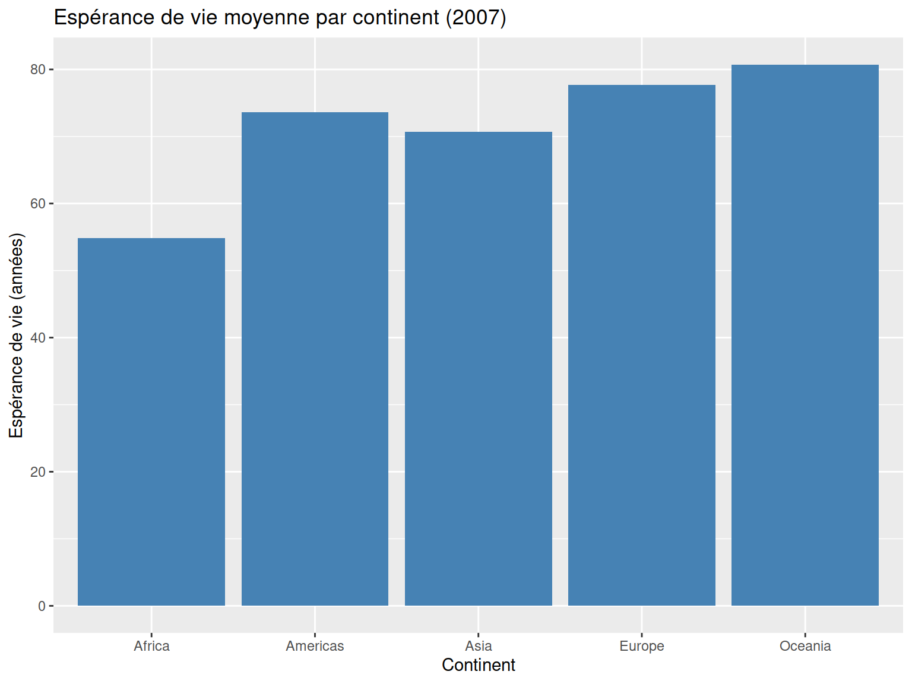
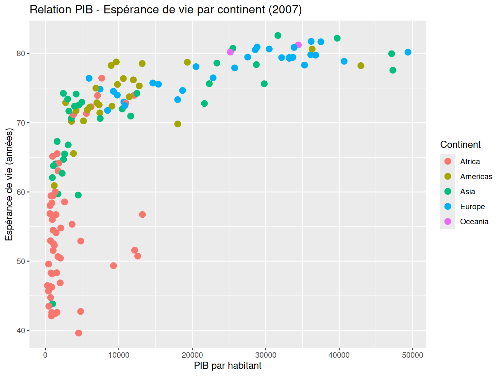

# 1. Créer un objet
pays_prefere <- "Canada"
# 2. Créer un vecteur de continents
continents <- c("Afrique", "Amérique", "Asie", "Europe", "Océanie")
# 3. Créer un vecteur de populations (en millions)
populations <- c(1200, 580, 4600, 750, 45)
# 4. Vérifier les types
class(pays_prefere) # character
class(continents) # character
class(populations) # numericExercices pratiques
Mise en pratique des concepts R
📋 Instructions générales
Cet exercice pratique vous permettra de mettre en application tous les concepts vus dans la formation R. Vous travaillerez avec des vraies données sur l’espérance de vie et l’économie des pays du monde.
🎯 Objectifs de l’exercice
- Manipuler des objets et vecteurs R
- Explorer un dataset réel
- Utiliser les fonctions de base et dplyr
- Créer des visualisations avec ggplot2
- Analyser des tendances dans les données
🏁 Exercice 1 : Premiers pas avec les objets
Objectif : Créer des objets et vecteurs pour vous familiariser avec R
Consignes
- Créez un objet
pays_prefereavec le nom de votre pays favori - Créez un vecteur
continentsavec les 5 continents principaux - Créez un vecteur
populationsavec des populations fictives (en millions) - Vérifiez les types de données avec
class()
🌍 Exercice 2 : Explorer le dataset gapminder
Objectif : Charger et explorer des vraies données internationales
Consignes
- Installez et chargez le package
gapminder - Chargez le dataset dans un objet appelé
donnees - Explorez la structure des données (
dim(),head(),str(),summary()) - Identifiez les variables disponibles
# 1. Charger les packages nécessaires
library(readr)
library(dplyr)
library(ggplot2)
# 2. Charger les données depuis le fichier CSV
donnees <- read_csv("donnees_pays.csv")
# 3. Explorer la structure
dim(donnees) # dimensions
head(donnees) # premiers cas
str(donnees) # structure détaillée
summary(donnees) # résumé statistique
# 4. Voir les noms des colonnes
names(donnees)🔍 Exercice 3 : Analyse descriptive
Objectif : Analyser les variables avec des fonctions statistiques
Consignes
- Calculez l’espérance de vie moyenne mondiale
- Trouvez le PIB par habitant minimum et maximum
- Comptez combien de pays uniques sont dans le dataset
- Identifiez les années disponibles dans les données
# Charger les données pour les solutions
library(readr)
library(dplyr)
donnees <- read_csv("data/donnees_pays.csv")
# 1. Espérance de vie moyenne
mean(donnees$lifeExp)[1] 59.47444# 2. PIB par habitant min et max
min(donnees$gdpPercap)[1] 241.1659max(donnees$gdpPercap)[1] 113523.1# 3. Nombre de pays uniques
length(unique(donnees$country))[1] 142# 4. Années disponibles
unique(donnees$year) [1] 1952 1957 1962 1967 1972 1977 1982 1987 1992 1997 2002 2007sort(unique(donnees$year)) # pour les avoir en ordre [1] 1952 1957 1962 1967 1972 1977 1982 1987 1992 1997 2002 2007🛠️ Exercice 4 : Manipulation avec dplyr
Objectif : Filtrer, sélectionner et transformer les données
Consignes
- Filtrez les données pour l’année 2007 seulement
- Sélectionnez uniquement les colonnes pays, continent et espérance de vie
- Créez une nouvelle variable
esperance_vie_mois(en mois au lieu d’années) - Triez les pays par espérance de vie décroissante
library(dplyr)
# 1. Filtrer pour 2007
donnees_2007 <- donnees %>%
filter(year == 2007)
# 2. Sélectionner certaines colonnes
donnees_select <- donnees_2007 %>%
select(country, continent, lifeExp)
# 3. Créer nouvelle variable (espérance de vie en mois)
donnees_mois <- donnees_select %>%
mutate(esperance_vie_mois = lifeExp * 12)
# 4. Trier par espérance de vie décroissante
donnees_triees <- donnees_mois %>%
arrange(desc(lifeExp))
# Voir le résultat
head(donnees_triees)# A tibble: 6 × 4
country continent lifeExp esperance_vie_mois
<chr> <chr> <dbl> <dbl>
1 Japan Asia 82.6 991.
2 Hong Kong, China Asia 82.2 986.
3 Iceland Europe 81.8 981.
4 Switzerland Europe 81.7 980.
5 Australia Oceania 81.2 975.
6 Spain Europe 80.9 971.📊 Exercice 5 : Analyses par groupe
Objectif : Utiliser group_by() et summarise() pour des analyses par continent
Consignes
- Calculez l’espérance de vie moyenne par continent en 2007
- Trouvez le PIB par habitant médian par continent
- Comptez le nombre de pays par continent
- Identifiez le continent avec la plus haute espérance de vie moyenne
# 1. Espérance de vie moyenne par continent (2007)
esperance_continent <- donnees %>%
filter(year == 2007) %>%
group_by(continent) %>%
summarise(esperance_moy = mean(lifeExp))
print(esperance_continent)# A tibble: 5 × 2
continent esperance_moy
<chr> <dbl>
1 Africa 54.8
2 Americas 73.6
3 Asia 70.7
4 Europe 77.6
5 Oceania 80.7# 2. PIB médian par continent
pib_continent <- donnees %>%
filter(year == 2007) %>%
group_by(continent) %>%
summarise(pib_median = median(gdpPercap))
print(pib_continent)# A tibble: 5 × 2
continent pib_median
<chr> <dbl>
1 Africa 1452.
2 Americas 8948.
3 Asia 4471.
4 Europe 28054.
5 Oceania 29810.# 3. Nombre de pays par continent
nb_pays <- donnees %>%
filter(year == 2007) %>%
group_by(continent) %>%
summarise(nombre_pays = n())
print(nb_pays)# A tibble: 5 × 2
continent nombre_pays
<chr> <int>
1 Africa 52
2 Americas 25
3 Asia 33
4 Europe 30
5 Oceania 2# 4. Continent avec plus haute espérance de vie
esperance_continent %>%
arrange(desc(esperance_moy)) %>%
head(1)# A tibble: 1 × 2
continent esperance_moy
<chr> <dbl>
1 Oceania 80.7📈 Exercice 6 : Visualisations
Objectif : Créer des graphiques pour explorer les tendances
Consignes
- Créez un graphique en barres de l’espérance de vie par continent (2007)
- Créez un histogramme du PIB par habitant en 2007
- Créez un nuage de points PIB vs espérance de vie (2007)
- Ajoutez des couleurs par continent au nuage de points
library(ggplot2)
# Préparer les données pour 2007
donnees_2007 <- donnees %>% filter(year == 2007)
# 1. Graphique en barres par continent
donnees_2007 %>%
group_by(continent) %>%
summarise(esperance_moy = mean(lifeExp)) %>%
ggplot(aes(x = continent, y = esperance_moy)) +
geom_col(fill = "steelblue") +
labs(title = "Espérance de vie moyenne par continent (2007)",
x = "Continent", y = "Espérance de vie (années)")
# 2. Histogramme du PIB par habitant
ggplot(donnees_2007, aes(x = gdpPercap)) +
geom_histogram(bins = 20, fill = "lightcoral", alpha = 0.7) +
labs(title = "Distribution du PIB par habitant (2007)",
x = "PIB par habitant", y = "Nombre de pays")
# 3. Nuage de points PIB vs espérance de vie
ggplot(donnees_2007, aes(x = gdpPercap, y = lifeExp)) +
geom_point() +
labs(title = "Relation PIB - Espérance de vie (2007)",
x = "PIB par habitant", y = "Espérance de vie (années)")
# 4. Nuage de points avec couleurs par continent
ggplot(donnees_2007, aes(x = gdpPercap, y = lifeExp, color = continent)) +
geom_point(size = 3) +
labs(title = "Relation PIB - Espérance de vie par continent (2007)",
x = "PIB par habitant", y = "Espérance de vie (années)",
color = "Continent")
🎯 Exercice bonus : Analyse temporelle
Objectif : Explorer l’évolution dans le temps
Consignes
- Calculez l’évolution de l’espérance de vie moyenne mondiale par décennie
- Identifiez le pays avec la plus forte croissance d’espérance de vie entre 1952 et 2007
- Créez un graphique linéaire de l’évolution du PIB moyen par continent
# 1. Évolution par décennie
evolution_decennie <- donnees %>%
group_by(year) %>%
summarise(esperance_mondiale = mean(lifeExp))
print(evolution_decennie)# A tibble: 12 × 2
year esperance_mondiale
<dbl> <dbl>
1 1952 49.1
2 1957 51.5
3 1962 53.6
4 1967 55.7
5 1972 57.6
6 1977 59.6
7 1982 61.5
8 1987 63.2
9 1992 64.2
10 1997 65.0
11 2002 65.7
12 2007 67.0# 2. Plus forte croissance d'espérance de vie
croissance_pays <- donnees %>%
filter(year %in% c(1952, 2007)) %>%
group_by(country) %>%
summarise(
croissance = lifeExp[year == 2007] - lifeExp[year == 1952]
) %>%
arrange(desc(croissance))
print(head(croissance_pays))# A tibble: 6 × 2
country croissance
<chr> <dbl>
1 Oman 38.1
2 Vietnam 33.8
3 Indonesia 33.2
4 Saudi Arabia 32.9
5 Libya 31.2
6 Korea, Rep. 31.2# 3. Graphique évolution PIB par continent
donnees %>%
group_by(continent, year) %>%
summarise(pib_moyen = mean(gdpPercap)) %>%
ggplot(aes(x = year, y = pib_moyen, color = continent)) +
geom_line(size = 1.2) +
labs(title = "Évolution du PIB moyen par continent",
x = "Année", y = "PIB par habitant moyen",
color = "Continent")
🏆 Félicitations !
Vous avez terminé tous les exercices ! Vous maîtrisez maintenant :
- ✅ La création d’objets et vecteurs
- ✅ L’exploration de datasets réels
- ✅ Les fonctions statistiques de base
- ✅ La manipulation de données avec dplyr
- ✅ Les visualisations avec ggplot2
- ✅ L’analyse de tendances temporelles
📚 Pour aller plus loin
- Explorez d’autres datasets avec
data() - Essayez de nouveaux types de graphiques
- Apprenez à importer vos propres données Excel/CSV
- Découvrez les analyses statistiques avancées
💾 Comment procéder
# À COMPLÉTER)Le fichier donnees_pays.csv contient des données sur l’espérance de vie, la population et le PIB par habitant pour 142 pays de 1952 à 2007. Ces données proviennent du célèbre dataset Gapminder utilisé mondialement pour l’enseignement de l’analyse de données.
Variables disponibles : -
country: Nom du pays -continent: Continent (Africa, Americas, Asia, Europe, Oceania) -year: Année (1952 à 2007, par intervalles de 5 ans) -lifeExp: Espérance de vie à la naissance (années) -pop: Population totale -gdpPercap: PIB par habitant (dollars US, ajusté inflation)